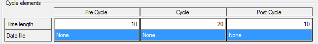

The grid on the top regroups cycle parts properties.

There is one column for each cycle part.
Row ‘Time length’ specifies the time length (in second) of each part, final cycle time length being the sum of cycle parts length. So in the example above, final cycle will be 40 seconds (10 + 20 + 10 = 40).
Row ‘Data file’ contains the file used as data source for each cycle part. All cycle parts can use the same or different files.
To set a data file for a cycle part, click in the ‘Data file’ cell of the part to make the ‘Open file’ button visible.

Click this button to open the open file dialog and select a file. Once the data file selected, its name is shown in the cell.

If the time length of the data file exceeds the time length of the cycle part, CANStream will propose you to change the cycle part length in order to match the length of the data file but this is not mandatory.
If the time length of a part exceeds the data file time length, the last sample value of the data file is used until the end of the cycle part.
Created with the Personal Edition of HelpNDoc: Produce Kindle eBooks easily